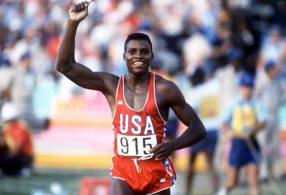

Retour sur la légende : Carl Lewis (JO de Los Angeles 1984)
Carl Lewis, né le 1961, est un ancien athlète américain. Dans sa carrière, il a remporté 10 médailles olympiques, dont 9 en or, ainsi que 10 médailles aux championnats du monde d'athlétisme, dont 8 en or.
Carl Lewis n’avait qu’un seul but dans la vie : devenir riche et célèbre. Cependant, l’athlétisme aux États-Unis dans les années 80 était une pratique sportive avec une couverture médiatique médiocre.
Ce sont les Jeux olympiques de Los Angeles, en 1984, et l’engouement des Américains pour ces Jeux qui vont lui donner la reconnaissance qu’il mérite. En effet, à l’instar de Jesse Owens, Carl Lewis fut l’athlète américain le plus médaillé lors des Jeux olympiques de Los Angeles en 1984, en remportant 4 médailles d’or.
L’athlète a remporté sa première médaille d’or aux Jeux olympiques lors du 100 mètres, offrant ainsi une revanche aux Américains qui n’avaient pas remporté de médailles d’or dans cette catégorie depuis 16 ans.
Il a remporté sa deuxième médaille lors de sa deuxième épreuve, le saut en longueur, en un seul essai, en passant la barre des 8,54 mètres.
Il obtient ensuite sa troisième médaille avec un nouveau record olympique lors de l’épreuve du 200 mètres.
C’est grâce au relais 4x100 mètres qu’il remporte sa quatrième médaille d’or, tout en égalant le record du monde, qui était établi à 37 secondes 83.
Ce succès aux Jeux olympiques de Los Angeles était pour lui un espoir de signer quelques contrats lucratifs dans son pays natal, mais ce ne fut finalement pas le cas. Toutefois, le monde entier retiendra son palmarès flamboyant, car il est nommé, en 1999, « sportif du siècle » par le Comité international olympique.